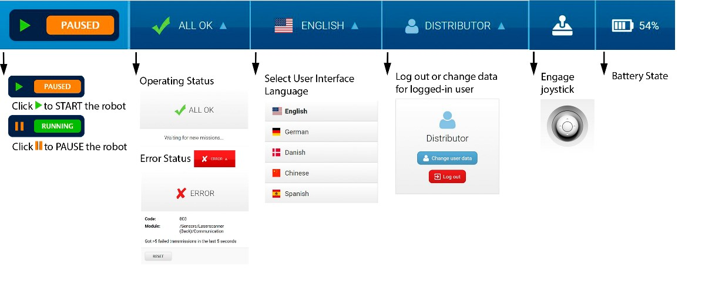
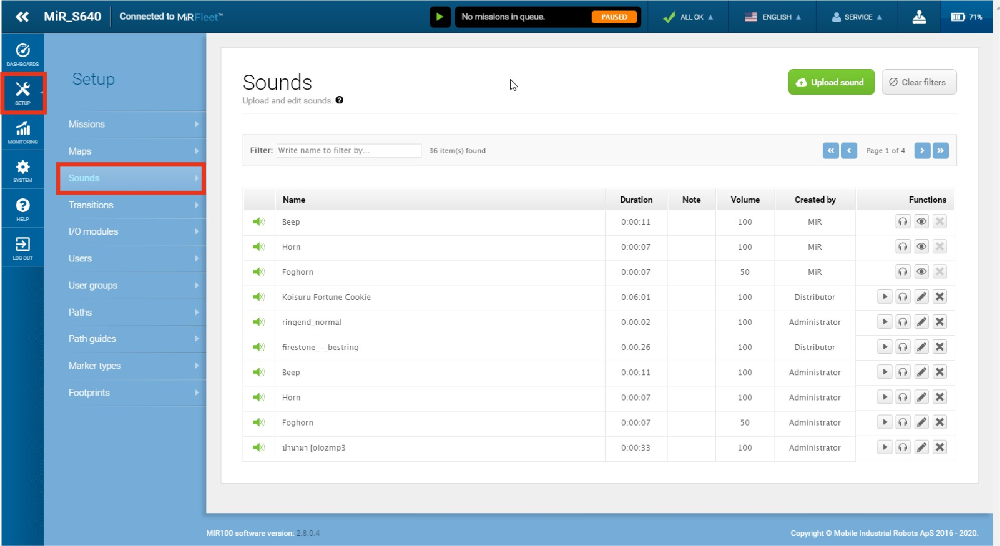

Web interface control
Interface overview
Let this serve as a brief overview of the MiR web interface. For detailed instructions see the full interface documentation.
Top bar
The top bar shows information on the current state of the robot. You can start/pause the robot, check robot status, select you language, select your user, check the robot battery percentage or manually control the robot with the joystick. Robot speed for manual control is fixed when using the joystick from the top bar.

Navigation
To get to a specific subsection of the interface select an item in the primary menu and then in the relevant sub-menu.

Dashboards
Dashboards are the main way you interact with the robot over the web interface. You can create your own dashboard that displays only relevant information for your use case. Select Dashboards to open the list of dashboards, and select the Create dashboard button to open the dashboard designer. Alternatively, you can select an existing dashboard from the list.
TODO: dashboard description TODO: dashboard picture
Map creation
Missions
A mission is a predefined series of actions that the robot can be set to perform.
Manual control
TODO: test if The joystick for driving the robot in Manual mode cannot be operated on Windows-based devices.